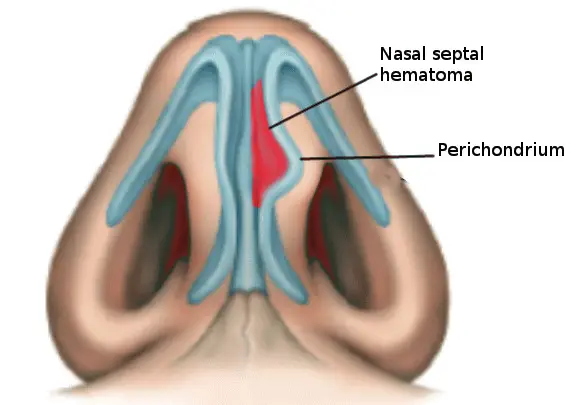
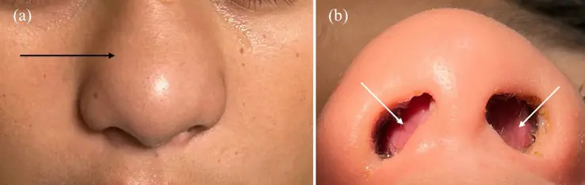

DX.8 — Hématome de la cloison nasale 🚩 E2
L’hématome de la cloison suit un traumatisme du nez ; la rhinoscopie après mouchage le montre comme une tuméfaction molle, sombre et souvent bilatéraleS1. L’oto-rhino-laryngologiste (ORL) le draine avant 24 heures, puis un antibiotique oral est donné 5 jours selon l’information professionnelle suisse (AIPS)S1AIPS 45674.
1. Définition
L’hématome de la cloison nasale est une collection de sang sous le périchondre du septum nasal, qui survient surtout après une fracture des os propres du nezS4.
2. Épidémiologie (Suisse, puis Europe)
Aucune incidence suisse n’a été trouvée ; les chiffres viennent de séries hospitalières allemandes, d’une série pédiatrique turque et d’une revue systématique britanniqueS4S5S7S3.
Il occupe le rang 8 de fréquence de la liste canonique et le rang E2 d’exclusion, qui vient juste après l’atrésie choanale bilatérale du nouveau-néS1S4.
Le tableau des chiffres réunit fréquence et terrain ; le tableau du traumatisme nasal décrit la population dans laquelle l’hématome se chercheS4S5S6.
Fréquence de l’hématome de cloison : chiffres lus
| Donnée | Population | Pays et année | Source |
|---|---|---|---|
| 0,6 % des fractures des os propres du nez (4 cas) | 675 patients avec fracture, 2015 à 2024 | Francfort, Allemagne, 2025 | S4 |
| Aucun hématome après réduction de la fracture | Même cohorte | Francfort, Allemagne, 2025 | S4 |
| Hématome septal dans 5 % des cas | 300 fractures nasales opérées, 1999 à 2004 | Marbourg, Allemagne, 2009 | S5 |
| 29 enfants avec hématome ou abcès de cloison, âge moyen de 7,79 ans | Série pédiatrique, 2006 à 2010 | Istanbul, Turquie, 2011 | S7 |
| Chute comme cause chez 26 enfants (89,6 %) | Même série | Istanbul, Turquie, 2011 | S7 |
| 503 patients, 17 articles (15 rétrospectifs, 2 prospectifs) | Revue systématique, enfants et adultes | Leeds, Royaume-Uni, 2025 | S3 |
Ces séries montrent que l’hématome reste rare, même parmi les fractures. Sa gravité justifie pourtant la recherche systématique prévue par le protocole des Hôpitaux universitaires de Genève (HUG)S4S1.
La série d’Istanbul provient d’un centre turc, à la frontière de l’Europe ; elle reste la seule série pédiatrique lue iciS7.
Terrain : qui se casse le nez ?
| Caractéristique | Valeur lue | Population | Source |
|---|---|---|---|
| Fracture faciale la plus fréquente | Fracture des os propres du nez, plus fréquente chez l’homme | Revue néerlandaise | S6 |
| Causes | Sport, accidents, violence physique, souvent avec alcool | Revue néerlandaise | S6 |
| Âge moyen à la fracture | 29,6 ans, second pic après 60 ans | 300 patients, Marbourg | S5 |
| Sexe masculin | 77 % | 300 patients, Marbourg | S5 |
| Mécanisme | Chutes 30 %, souvent par syncope cardiaque chez l’âgé ; bagarres 28 % | 300 patients, Marbourg | S5 |
| Fracture ouverte | 65 patients (22 %) | 300 patients, Marbourg | S5 |
| Déviation traumatique du septum | 50 % | 300 patients, Marbourg | S5 |
L’hématome se cherche donc chez l’homme jeune après une bagarre ou un sport, chez l’enfant après une chute et chez l’âgé après une syncopeS5S6S7.
3. Physiopathologie
Le choc décolle le périchondre du cartilage septal et le sang remplit cet espaceS4. La collection apparaît le plus souvent des deux côtés de la cloison à l’examenS4S1.
Le tableau de la cascade suit la collection jusqu’à l’abcès et à la fonte du cartilage ; le tableau des autres origines élargit la cause au geste chirurgicalS1S2.
La fenêtre anatomique rappelle de quoi la cloison est faite, et pourquoi le cartilage reste la structure menacéeS2S8.
De la collection à la fonte du cartilage : la cascade
| Étape | Ce qui se passe | Traduction clinique | Délai lu | Source |
|---|---|---|---|---|
| Traumatisme | Choc frontal ou latéral sur la pyramide nasale | Douleur, épistaxis, déformation | Heure du choc à noter | S1 |
| Collection sous-périchondrale | Sang accumulé sous le périchondre de la cloison | Tuméfaction de la cloison, obstruction | Premières heures | S4S9 |
| Hématome méconnu | Collection non diagnostiquée initialement | Obstruction persistante après quelques jours | Quelques jours après le choc | S1 |
| Surinfection | Abcès de la cloison secondaire à l’hématome | Collection infectée de la cloison | Durée moyenne plus longue que pour l’hématome dans la série pédiatrique | S1S7 |
| Extension | Cellulite orbitaire, méningite, sinusite ethmoïdale, thrombophlébite du sinus caverneux, abcès cérébral | Urgence vitale | Après quelques jours | S1 |
| Nécrose et fibrose | Fonte du cartilage | Ensellure nasale, troubles de la perméabilité nasale, déviation septale | Séquelle tardive | S1 |
Dans la série pédiatrique, la durée moyenne rapportée atteignait 8,40 jours dans le groupe abcès contre 3,58 jours dans le groupe hématomeS7.
L’hématome méconnu figure donc en tête des complications tardives du protocole genevois ; il ouvre la voie à toutes les suivantesS1.
Autres origines de l’hématome et facteurs discutés
| Situation | Ce qui est décrit | Conséquence | Source |
|---|---|---|---|
| Après septoplastie | Un saignement sous la muqueuse doit être évité et, s’il se produit, il doit être drainé | Surveillance postopératoire de la cloison | S2 |
| Médicaments avant chirurgie | Aspirine et anticoagulants à signaler à l’opérateur | Moment de la prise discuté avec l’opérateur | S2 |
| Troubles de l’hémostase après trauma | Antécédents à rechercher : troubles de l’hémostase, anticoagulants, antiagrégants | Anamnèse systématique | S1 |
| Coagulopathie ou anticoagulant | Aucune corrélation significative avec l’hématome (p = 1) | Le risque reste faible même sous anticoagulant | S4 |
| Réduction de la fracture | Aucun hématome après repositionnement | Le geste ne crée pas de collection dans cette cohorte | S4 |
La cohorte allemande ne trouve pas de lien avec les anticoagulants ; le protocole genevois garde pourtant cette question, car elle oriente aussi le risque d’épistaxisS4S1.
La cloison nasale : repères anatomiques utiles
| Structure | Description lue | Intérêt pour l’hématome | Source |
|---|---|---|---|
| Cloison nasale (septum) | Cloison qui sépare les deux cavités à l’intérieur du nez | Siège de la collection | S8 |
| Composition | Une partie cartilagineuse et plusieurs parties osseuses | La partie cartilagineuse souffre de la nécrose | S2 |
| Muqueuse et périchondre | Tissus que le chirurgien décolle des parties cartilagineuses et osseuses lors de la septoplastie | Plan dans lequel le sang se collecte | S2S9 |
| Pyramide osseuse | Structure ostéo-cartilagineuse du nez décrite par le protocole | Sa fracture accompagne souvent l’hématome | S1 |
| Déviation traumatique | Un traumatisme peut fracturer ou dévier des parties de la cloison | Lésion associée fréquente | S2S8 |
Le plan de décollement chirurgical est celui où le sang s’accumule après un choc ; la septoplastie expose donc au même risque, que l’information suisse mentionneS2S4.
Hématome de la cloison vu par en dessous : ce schéma en couleurs du docteur Bhimji montre la collection septale et reste publié sous licence CC BY 4.0S9.

Le lecteur doit chercher d’abord la collection rouge, logée contre la cloison, puis la ligne bleue du périchondre soulevéS9.
- 1. Le repère 1 montre l’hématome, collection rouge qui bombe dans la fosse nasale et la rétrécitS9S4.
- 2. Le repère 2 montre le périchondre, décollé du cartilage par la collection sous-périchondraleS9S4.
- 3. Le repère 3 montre la cloison cartilagineuse, que la fonte expose à l’ensellure si l’hématome reste méconnuS9S1.
- 4. Le repère 4 montre une narine, par laquelle le spéculum ou l’otoscope découvre la tuméfactionS9S1.
- 5. Le repère 5 montre le cartilage alaire, structure voisine qui n’est pas en cause dans l’hématomeS9.
Hématome septal infecté de l’enfant : la photographie en couleurs montre le dos du nez gonflé, puis la cloison bombée qui ferme les deux narinesS10.

Le lecteur cherche d’abord seul la tuméfaction du dos du nez, puis la cloison qui bombe dans chaque narine.
La copie annotée porte trois repères, contrôlés par superposition sur l’image brute.
Ce que l’image décide. Une cloison bombée des deux côtés impose la ponction ou le drainage par le spécialiste ORL, selon le protocole genevoisS1.
4. Démarche diagnostique
L’hématome constitue le deuxième diagnostic d’exclusion (E2) : la démarche le cherche chez tout traumatisé du nez, juste après l’urgence respiratoire de l’atrésie choanaleS1.
Le tableau différentiel oppose les lésions d’un nez traumatisé, puis les étapes du protocole genevois fixent le délai de chaque gesteS1S6.
Le traitement par forme situe l’hématome parmi les autres lésions, et les critères d’hospitalisation désignent les patients qui ne rentrent pas chez euxS1.
Diagnostic différentiel d’un nez bouché après traumatisme
| Lésion | Indice qui oriente | Ce qui la sépare de l’hématome | Source |
|---|---|---|---|
| Atrésie des choanes (DX.9) 🚩 E1 | Cyanose au repos corrigée par les cris ; forme unilatérale : écoulement d’un côté | Sonde arrêtée dans la fosse, puis endoscopie et tomodensitométrie (TDM) des choanes | DX.9 |
| Corps étranger nasal (DX.7) 🚩 E3 | Enfant, obstruction unilatérale sans choc | Absence de traumatisme | DX.7 |
| Tumeur maligne nasosinusienne (DX.10) 🚩 E4 | Obstruction unilatérale progressive, saignement, signes oculaires | Endoscopie avec biopsie, tomodensitométrie (TDM) et imagerie par résonance magnétique (IRM) | DX.10 |
| Rhinite virale aiguë (DX.2) | Rhume, entourage malade, mal de gorge | Clinique ; résolution spontanée | DX.2 |
| Rhinite allergique (DX.1) | Prurit, éternuements en salves, rhinorrhée claire | Tests cutanés ou IgE spécifiques concordant avec l’anamnèse | DX.1 |
| Déviation de la cloison préexistante (DX.4) | Déformation connue avant l’accident | Photos d’avant l’accident | DX.4 S1 |
| Rhinosinusite chronique avec polypes (DX.5) | Perte de l’odorat, écoulement, gêne bilatérale prolongée | Endoscopie : polypes du méat moyen, puis TDM | DX.5 |
| Hypertrophie adénoïdienne (DX.6) | Ronflement, respiration buccale, otites séreuses | Nasofibroscopie du cavum | DX.6 |
| Rhinite médicamenteuse (DX.3) | Vasoconstricteur nasal au-delà d’une semaine, effet de plus en plus bref | Anamnèse ; amélioration au sevrage | DX.3 |
| Abcès de la cloison | Hématome méconnu depuis plusieurs jours | Délai plus long, contenu purulent | S1S7 |
| Déviation septale traumatique | Cloison déplacée, sans collection | Cloison ferme, non dépressible | S5S1 |
| Fracture du cartilage septal | Fausse mobilité, angulation de la cloison | Pas de tuméfaction molle | S1 |
| Œdème et ecchymoses | Tuméfaction externe, résolutive en environ 3 jours | Siège externe, sans collection septale | S1 |
| Épistaxis avec caillot | Saignement, caillot dans la fosse | Caillot mobile après mouchage | S1 |
L’examen après mouchage sépare le caillot de l’hématome ; c’est pourquoi le protocole genevois impose le mouchage avant le spéculumS1.
Étapes du protocole genevois devant un traumatisme du nez
| Étape | Geste | Seuil ou délai | Conduite | Source |
|---|---|---|---|---|
| 1. Sécuriser | Voies aériennes, épistaxis massive, fuite de liquide céphalorachidien, fracture ouverte | Immédiat | Algorithme du polytraumatisé, patient à jeun | S1 |
| 2. Anamnèse | Mécanisme, heure, cinétique, antécédents, médicaments, allergies | Dès l’accueil | Orienter le risque | S1 |
| 3. Examen | Observation, palpation, rhinoscopie, examen endobuccal, examen neurologique | Dès l’accueil | Classer la lésion | S1 |
| 4. Rhinoscopie ciblée | Après mouchage, spéculum ou otoscope | Chez tout traumatisé | Hématome oui ou non | S1 |
| 5. Drainage | Par le spécialiste ORL | Délai et antibiotique : voir le traitement structuré | Geste du point 11 | S1 |
| 6. Suivi | Contrôle chez le spécialiste | Voir le calendrier de surveillance | Programmer une réduction si besoin | S1 |
Le délai de 24 heures vaut pour l’hématome, alors que la réduction d’une fracture se fait vers le septième jour, d’où deux calendriers distinctsS1S6.
Traitement aux urgences selon la forme du traumatisme
| Forme | Traitement aux urgences | Suivi | Source |
|---|---|---|---|
| Contusion nasale | Antalgie, glace, lavage des fosses nasales (Rhinomer®), oxymétazoline (Nasivin®) hors AIPS dans ce cours, sans dose, rappel diphtérie-tétanos | Contrôle éventuel chez le médecin traitant | S1 |
| Fracture isolée simple | Antalgie, glace, Rhinomer®, oxymétazoline (Nasivin®) hors AIPS, sans dose | Spécialiste vers le jour 3, au plus tard jour 5 | S1 |
| Fracture isolée complexe sans hématome | Appel du spécialiste en urgence ; aux HUG, chirurgien maxillo-facial, sinon ORL | Selon le spécialiste | S1 |
| Hématome de cloison | Drainage par le spécialiste ORL selon le traitement structuré | Voir le calendrier de surveillance | S1 |
| Fracture ouverte | Antibiotique oral 5 jours, rappel diphtérie-tétanos, antalgie, glace | Spécialiste | S1 |
Le protocole sépare donc nettement l’hématome des autres formes : c’est la seule lésion isolée du nez qui impose un geste chirurgical dans la journéeS1.
Critères d’hospitalisation du traumatisé du nez
| Critère | Conduite associée | Source |
|---|---|---|
| Hémorragie importante | Méchage par le spécialiste | S1 |
| Fuite de liquide céphalorachidien | Bêta-2-transferrine, neurochirurgien | S1 |
| Autre indication chez le polytraumatisé | Prise en charge selon l’algorithme du polytraumatisé | S1 |
| Risque d’obstruction des voies aériennes | Protection des voies aériennes, oxygène | S1 |
| Fracture ouverte de la face | Antibiotique intraveineux | S1 |
Ces critères visent les lésions associées ; un hématome isolé, une fois drainé, permet un suivi ambulatoire chez le spécialisteS1.
5. Anamnèse ciblée et drapeaux rouges
L’anamnèse reconstitue le choc et recherche les éléments qui changent la conduite : anticoagulant, allergie à la pénicilline et signes de lésion associéeS1.
Le tableau des questions donne chaque question avec son interprétation ; la fenêtre des drapeaux rouges liste les urgences qui passent avant le drainageS1.
Questions ciblées et interprétation
| Question | Réponse à retenir | Interprétation | Source |
|---|---|---|---|
| Comment le choc est-il survenu ? | Choc frontal ou latéral, cinétique élevée | Une haute énergie évoque une fracture complexe | S1 |
| À quelle heure ? | Heure précise | Point de départ du délai de 24 heures | S1 |
| Avez-vous perdu connaissance ? | Oui | Traumatisme crânien associé à évaluer | S1 |
| Quelle est votre douleur ? | Échelle visuelle analogique | Douleur septale avec obstruction : signe des hématomes de Francfort | S1S4 |
| Respirez-vous par le nez ? | Obstruction | Associée à la tuméfaction douloureuse dans tous les cas d’hématome de Francfort | S4 |
| Prenez-vous un anticoagulant ou un antiagrégant ? | Oui | Risque d’épistaxis ; antécédent de l’hémostase à noter | S1 |
| Êtes-vous allergique à la pénicilline ou à l’iode ? | Oui | Clindamycine à la place de l’amoxicilline-acide clavulanique | S1 |
| Votre nez était-il déjà dévié ? | Déformation antérieure | Photos d’avant l’accident à apporter au contrôle | S1 |
| Êtes-vous vacciné contre le tétanos ? | Statut incertain | Rappel diphtérie-tétanos à discuter | S1 |
| Le choc date-t-il de plusieurs jours ? | Oui, avec obstruction persistante | Hématome méconnu ou abcès | S1S7 |
Chez l’enfant, la chute domine les mécanismes ; la question du choc doit donc être posée même devant un nez qui paraît intactS7.
Drapeaux rouges : ce qui passe avant le drainage
| Signe | Lésion suspectée | Conduite immédiate | Source |
|---|---|---|---|
| Dyspnée aiguë | Obstruction des voies aériennes | Protéger les voies aériennes, oxygène au masque | S1 |
| Épistaxis massive | Hémorragie | Tamponnement antérieur, position à 45°, hémostase par le spécialiste | S1 |
| Écoulement clair | Fistule de liquide céphalorachidien | Dosage de la bêta-2-transferrine ; si positif, appel neurochirurgical urgent | S1 |
| Plaie sur fracture | Fracture ouverte | Antibiotique intraveineux, rappel diphtérie-tétanos | S1 |
| Cécité, diplopie, trouble pupillaire | Lésion orbitaire ou neurologique | Avis spécialisé | S1 |
| Obstruction et tuméfaction persistantes quelques jours après le choc | Hématome méconnu ou abcès de la cloison | Avis ORL sans délai | S1S7 |
Ces urgences ne retardent pas la recherche de l’hématome ; elles la précèdent, puis le spécialiste draine la collection dans le même délaiS1.
6. Examen physique ciblé, région par région
L’examen suit le protocole genevois, région par région, et se termine par la rhinoscopie qui découvre l’hématomeS1.
Chaque région a sa fenêtre, qui ouvre l’observation de la face, la palpation, la rhinoscopie, l’examen endobuccal et l’examen neurologiqueS1.
Région 1 — observation de la face
| Élément | Ce qu’on cherche | Interprétation | Source |
|---|---|---|---|
| Position | Regarder le patient de face, puis depuis le bas | Axe et symétrie de la pyramide et des narines | S1 |
| Déformation | Axe dévié, narines asymétriques | Fracture probable | S1 |
| Écoulement | Clair ou mélangé au sang | Fistule de liquide céphalorachidien | S1 |
| Ecchymose périorbitaire | Coloration autour des yeux | Lésion faciale associée | S1 |
| Plaie cutanée | Plaie en regard de la fracture | Fracture ouverte | S1 |
| Occlusion dentaire, larmoiement | Trouble de l’articulé, larmes | Fracture associée | S1 |
L’observation par le bas montre déjà l’élargissement de la cloison lorsque l’hématome est volumineux ; c’est une déduction tirée du schéma vu par en dessousS9S1.
Région 2 — palpation
| Élément | Signe | Interprétation | Source |
|---|---|---|---|
| Pyramide nasale | Points douloureux, fausse mobilité | Fracture des os propres | S1 |
| Dos du nez | Ensellure | Fracture ou fonte du cartilage | S1 |
| Peau | Crépitations | Emphysème sous-cutané | S1 |
| Planchers orbitaires, os zygomatiques | Zone d’enfoncement | Fracture faciale associée | S1 |
Une ensellure tardive évoque la fonte du cartilage après un hématome méconnu ; elle se recherche donc aussi au contrôleS1.
Région 3 — rhinoscopie antérieure, le geste décisif
| Élément | Description lue | Interprétation | Source |
|---|---|---|---|
| Préparation | Après mouchage | Le caillot est évacué | S1 |
| Instrument | Spéculum, ou otoscope si le spéculum manque | Examen faisable aux urgences et au cabinet | S1 |
| Consistance | Tuméfaction molle, dépressible à la palpation | Collection liquide | S1 |
| Forme | Arrondie en verre de montre | Bombement de la cloison | S1 |
| Côté | Le plus souvent des deux côtés | Examiner les deux fosses | S1 |
| Couleur | Sombre | Sang collecté | S1 |
| Autres lésions | Fracture du cartilage septal, épistaxis, plaie de muqueuse | À noter dans le dossier | S1 |
Cette description en cinq traits suffit au diagnostic ; dans la cohorte de Francfort, la tuméfaction septale douloureuse avec obstruction ne s’observait que chez les patients porteurs d’hématomeS1S4.
Région 4 — examen endobuccal
| Élément | Signe | Conduite | Source |
|---|---|---|---|
| Dents | Fracture, luxation, avulsion | Numérisation dentaire | S1 |
| Gencives | Lésions gingivales | Soins locaux | S1 |
| Pharynx | Saignement ou écoulement postérieur | Épistaxis postérieure | S1 |
L’examen endobuccal recherche une fracture associée de la face ; sa découverte fait basculer le patient dans le volet complexe du protocoleS1.
Région 5 — examen neurologique
| Élément | Signe | Interprétation | Source |
|---|---|---|---|
| Conscience | Score de Glasgow | Traumatisme crânien | S1 |
| Nerfs crâniens | Déficit olfactif, cécité, pupilles, diplopie | Lésion orbitaire ou de la base du crâne | S1 |
| Sensibilité | Hypoesthésie de la face | Fracture faciale associée | S1 |
Un déficit neurologique impose l’attente du spécialiste pour la suite de la prise en charge, selon les complications immédiates du protocoleS1.
7. Approche syndromique
L’hématome appartient au syndrome du traumatisme nasal, que le protocole genevois découpe en contusion, fracture isolée simple, fracture isolée complexe et fracture associéeS1.
Le tableau syndromique donne pour chaque forme sa définition et son orientation ; l’hématome fait d’une fracture simple une fracture complexeS1.
Formes du traumatisme nasal selon le protocole genevois
| Forme | Définition lue | Orientation | Source |
|---|---|---|---|
| Contusion nasale | Choc sans fracture | Traitement aux urgences, contrôle éventuel chez le médecin traitant | S1 |
| Fracture isolée simple | Choc de basse énergie, sans déformation, sans tuméfaction, sans plaie, sans hématome de cloison, mais forte suspicion clinique | Antalgie, glace, lavage, suivi spécialisé | S1 |
| Fracture isolée complexe | Haute énergie, déformation, tuméfaction, plaie profonde ou hématome de cloison | Spécialiste en urgence | S1 |
| Fracture associée | Autre fracture de la face : Le Fort, arcade zygomatique, os malaire, fracture « blow-out », sinus, dent | Scanner du massif facial, spécialiste en urgence | S1 |
Le classement repose sur l’examen clinique et non sur l’imagerie ; le diagnostic des fractures isolées du nez reste essentiellement cliniqueS1S6.
8. Diagnostic positif et critères
Le diagnostic positif est clinique : il réunit un traumatisme nasal, une obstruction douloureuse et une tuméfaction septale molle, sombre et dépressible à la rhinoscopieS1S4.
Le tableau des critères sépare les signes de l’hématome de ceux de l’abcès, qui en est la complicationS1S7.
Critères du diagnostic positif
| Critère | Hématome | Abcès | Source |
|---|---|---|---|
| Contexte | Traumatisme récent, parfois chirurgie septale | Hématome méconnu | S1S2 |
| Durée moyenne rapportée | 3,58 jours dans la série pédiatrique | 8,40 jours dans la même série | S7 |
| Symptômes | Tuméfaction septale douloureuse et obstruction | Surinfection, extension possible | S4S1 |
| Rhinoscopie | Tuméfaction molle, dépressible, arrondie, sombre, souvent bilatérale | Collection infectée | S1 |
| Séquelles | Données et étiologies semblables dans la série pédiatrique | Données et étiologies semblables | S7 |
Les deux formes partagent démographie, causes et séquelles dans la série pédiatrique ; seule la durée moyenne les sépare significativementS7.
9. Examens complémentaires
Aucune radiographie standard n’est systématique : le protocole genevois rappelle que le diagnostic des fractures isolées du nez est essentiellement cliniqueS1.
Le tableau des examens ciblés donne indication, interprétation et conduite pour chaque examen que le traumatisme peut justifierS1S6.
Examens ciblés : indication, interprétation, conduite
| Examen | Indication | Interprétation | Conduite | Source |
|---|---|---|---|---|
| Radiographie standard du nez | Aucune indication systématique | Valeur diagnostique limitée, ne change pas la conduite | Ne pas demander | S1S6 |
| Tomodensitométrie à faisceau conique dans les 24 h, avec photos | Agression, à titre médico-légal | Documentation de la fracture | Demande aux urgences | S1 |
| Scanner du massif facial | Fracture nasale potentiellement associée à une autre fracture faciale | Bilan des fractures associées | Spécialiste en urgence | S1 |
| Bêta-2-transferrine | Écoulement clair suspect de liquide céphalorachidien | Positif : fistule de liquide céphalorachidien | Appel neurochirurgical urgent | S1 |
| Voie veineuse et laboratoire | Fracture compliquée : épistaxis massive, fistule, dyspnée, fracture ouverte | Préparation à l’hospitalisation | Patient à jeun | S1 |
| Numérisation dentaire | Lésion dentaire | Bilan dentaire | Avis dentaire | S1 |
Aucun examen ne remplace la rhinoscopie pour l’hématome ; l’imagerie sert aux lésions associées, au dossier médico-légal et aux complicationsS1S6.
La fenêtre de la valeur des signes chiffre ce que l’examen clinique apporte, d’après la cohorte allemande et la revue britanniqueS4S3.
Valeur chiffrée des signes et des contrôles
| Observation | Chiffre | Interprétation | Source |
|---|---|---|---|
| Tuméfaction septale douloureuse avec obstruction | Présente chez les 4 patients porteurs d’hématome (100 %) | Signe observé exclusivement chez les hématomes de la cohorte | S4 |
| Hématome après réduction de la fracture | n = 0 | Le contrôle systématique après réduction rapporte peu | S4 |
| Coagulopathie ou anticoagulant | p = 1 | Pas de facteur prédictif démontré | S4 |
| Contrôles systématiques au lendemain | Jugés non justifiés par l’effort d’organisation | Information du patient privilégiée | S4 |
| Récidive après drainage | 3,6 % | Faible taux, quelle que soit la technique de prévention | S3 |
La cohorte de Francfort ne compte que 4 hématomes ; la valeur du signe clinique reste donc estimée sur un très petit effectifS4.
10. Arbre décisionnel
L’arbre suivant reprend les losanges de décision du protocole genevois ; il suit l’ordre dans lequel le médecin les rencontre aux urgencesS1.
- Si le patient a une dyspnée, une épistaxis massive, une fistule de liquide céphalorachidien ou une fracture ouverte, alors le médecin traite d’abord cette urgenceS1.
- Si une autre fracture faciale est possible, alors il demande un scanner du massif facial et appelle le spécialiste en urgenceS1.
- Si la rhinoscopie après mouchage montre une tuméfaction molle et sombre, alors il appelle l’ORL pour un drainage dans les 24 heuresS1.
- Si le drainage est fait, alors il prescrit un antibiotique oral pendant 5 jours, ou la clindamycine en cas d’allergie à la pénicillineS1.
- Si le choc date de plusieurs jours et que la cloison reste tuméfiée, alors il suspecte un abcès et adresse le patient sans délaiS1S7.
- Si aucun hématome n’est trouvé, alors il traite la contusion ou la fracture et explique les signes qui imposent de revenirS1S4.
11. Prise en charge selon les recommandations suisses
Le protocole des HUG fournit la conduite suisse : drainage par le spécialiste ORL avant 24 heures, puis antibiotique oral pendant 5 joursS1.
11.A But. Le traitement évacue la collection, empêche la récidive et prévient l’abcès, la nécrose du cartilage et l’ensellureS1S3.
11.B Moyens. Les moyens associent drainage chirurgical, antibiothérapie orale, traitement symptomatique et prévention du tétanos ; aucun traitement médical seul ne suffitS1S3.
Le tableau du traitement structuré donne molécule, dose AIPS, durée, contrôle et critère d’échec ; la fenêtre du drainage détaille les techniques publiéesS1S3AIPS 45674.
Les fiches AIPS de l’amoxicilline-acide clavulanique adulte, de la suspension pédiatrique et de la clindamycine recopient grossesse, allaitement et contre-indicationsAIPS 45674AIPS 53982AIPS 35438.
Traitement structuré après le diagnostic
| Moyen | Molécule ou geste | Dose | Durée | Contrôle | Critère d’échec | Source |
|---|---|---|---|---|---|---|
| Drainage | Incision et drainage par le spécialiste ORL | Geste chirurgical | Avant 24 heures | Collection évacuée | Nouvelle collection | S1S3 |
| Antibiotique, adulte | Amoxicilline-acide clavulanique (Augmentin®) | Adulte de plus de 40 kg : 3 x 625 mg (500/125) par jour selon l’AIPSAIPS 45674 | 5 jours | Contrôle jour 3 à jour 5 | Nouvelle collection, signes d’infection | S1AIPS 45674 |
| Antibiotique, enfant de moins de 40 kg | Amoxicilline-acide clavulanique en suspension | Plus de 2 ans, infection légère à modérée : 25–37,5 mg/kg/jour en 3 doses selon l’AIPSAIPS 53982 | 5 jours | Contrôle jour 3 à jour 5 | Nouvelle collection, signes d’infection | S1AIPS 53982 |
| Antibiotique, allergie à la pénicilline | Clindamycine (Dalacin® C) | Adulte, infection moyenne : 600–1200 mg par jour en 3 ou 4 doses selon l’AIPSAIPS 35438 | 5 jours | Contrôle jour 3 à jour 5 | Réaction cutanée sévère : arrêt | S1AIPS 35438 |
| Antalgie et glace | Antalgique, glace sur la pyramide | Selon la douleur | Premiers jours | Échelle de douleur | Douleur croissante | S1 |
| Soins locaux | Lavage des fosses nasales (Rhinomer®), oxymétazoline (Nasivin®) | Oxymétazoline hors AIPS dans ce cours : aucune dose reprise | Courte durée | — | — | S1 |
| Tétanos | Rappel diphtérie-tétanos | Selon les recommandations vaccinales | Une fois | Carnet de vaccination | — | S1 |
Le protocole genevois fixe la durée de 5 jours et le choix de la clindamycine en cas d’allergie ; les doses proviennent des informations professionnelles suisses citéesS1AIPS 45674AIPS 35438.
La revue britannique trouve une antibioprophylaxie dans la plupart des séries, sans étude qui compare les schémas. La durée de 5 jours reste donc un choix d’experts genevoisS3S1.
Drainage : techniques et résultats publiés
| Élément | Résultat lu | Population | Source |
|---|---|---|---|
| Geste commun | Incision et drainage dans toutes les séries | 503 patients, 17 études | S3 |
| Anesthésie | Drainage le plus souvent sous anesthésie générale | Même revue | S3 |
| Prévention de la récidive | Points de capitonnage, drains, méchage nasal, seuls ou combinés | Même revue | S3 |
| Récidive de la collection | 18 patients sur 503 (3,6 %) | Même revue | S3 |
| Qualité des preuves | Aucune étude bien conçue ne compare les techniques | Même revue | S3 |
| Drainage après septoplastie | Un hématome septal postopératoire doit être drainé | Information de la Société suisse d’ORL | S2 |
| Recours en Suisse romande | ORL de garde ; chirurgien maxillo-facial pour les fractures associées | Protocole genevois | S1 |
Le taux de récidive reste faible après incision et drainage ; la surveillance vise donc surtout la récidive précoce et l’infectionS3.
Fiche AIPS — amoxicilline-acide clavulanique (Augmentin® comprimés filmés)
| Rubrique | Contenu de l’AIPS (information professionnelle suisse) |
|---|---|
| Indication | Infections dues à des bactéries Gram positif et Gram négatif sensibles, selon les recommandations locales officiellesAIPS 45674 |
| Dose usuelle | Adultes et enfants de plus de 40 kg : 3 x 625 mg (500/125) par jour pour les infections légères, modérées et sévèresAIPS 45674 |
| Enfant de moins de 40 kg | Comprimés filmés non adaptés : voir les suspensionsAIPS 45674 |
| Contre-indications | « L'usage d'Augmentin est contre-indiqué en cas d'hypersensibilité connue aux pénicillines et céphalosporines ou à un composant d'Augmentin, de même que chez les patients qui ont présenté un ictère ou des troubles de la fonction hépatique pendant un traitement antérieur par Augmentin. »AIPS 45674 |
| Grossesse | « Augmentin ne devrait donc être utilisé pendant la grossesse qu'en cas de nécessité absolue. »AIPS 45674 |
| Allaitement | « Étant donné que des traces d'Augmentin passent dans le lait maternel, des réactions d'hypersensibilité sont possibles chez les nouveau-nés sensibles. » « Il ne faudrait donc pas allaiter pendant le traitement par Augmentin. »AIPS 45674 |
| Mise à jour | Septembre 2026AIPS 45674 |
L’AIPS demande d’adapter la dose à la fonction rénale ; la clairance de la créatinine se vérifie donc chez l’âgé ou l’insuffisant rénalAIPS 45674.
Fiche AIPS — amoxicilline-acide clavulanique en suspension (Co-Amoxi-Mepha), enfant
| Rubrique | Contenu de l’AIPS (information professionnelle suisse) |
|---|---|
| Dose, moins de 2 ans | 25–50 mg/kg/jour, divisés en 3 doses uniques avec les formes 156,25 et 312,5AIPS 53982 |
| Dose, plus de 2 ans | Infections légères à modérées : 25–37,5 mg/kg/jour ; infections sévères : 50–75 mg/kg/jourAIPS 53982 |
| Contre-indications | « L'usage de Co-Amoxi-Mepha est contre-indiqué en cas d'hypersensibilité connue aux pénicillines et céphalosporines ou à un constituant de Co-Amoxi-Mepha, de même que chez les patients qui ont présenté un ictère ou des troubles de la fonction hépatique pendant un traitement antérieur par Co-Amoxi-Mepha. »AIPS 53982 |
| Grossesse | « Co-Amoxi-Mepha ne devrait donc être utilisé pendant la grossesse qu'en cas de nécessité absolue. »AIPS 53982 |
| Allaitement | « Il ne faudrait donc pas allaiter pendant le traitement par Co-Amoxi-Mepha. »AIPS 53982 |
| Mise à jour | Août 2026AIPS 53982 |
L’enfant reçoit donc une suspension dosée au poids ; le choix de la forme et de la dose quotidienne suit l’AIPS de la suspension, non celle des comprimésAIPS 53982AIPS 45674.
Fiche AIPS — clindamycine (Dalacin® C), allergie à la pénicilline
| Rubrique | Contenu de l’AIPS (information professionnelle suisse) |
|---|---|
| Indication | Infections à bactéries anaérobies et aérobies Gram positif sensibles, dont infections de la peau et des tissus mous, abcèsAIPS 35438 |
| Dose orale adulte | Infection moyenne : 600-1200 mg par jour ; très sévère : 1200-1800 mg par jour, en 3 ou 4 dosesAIPS 35438 |
| Dose orale enfant | Infection moyenne : 8-12 mg/kg/jour, en 3 ou 4 doses ; dès 1 moisAIPS 35438 |
| Prise | Gélules entières avec un grand verre d’eau, au moins 30 minutes avant le coucherAIPS 35438 |
| Contre-indications | « Hypersensibilité connue envers la clindamycine ou la lincomycine. »AIPS 35438 |
| Grossesse | « La prudence est de rigueur lors de l'utilisation de Dalacin C pendant la grossesse. La clindamycine ne doit être administrée pendant la grossesse qu'en cas de nécessité absolue. »AIPS 35438 |
| Allaitement | « L'administration orale ou parentérale de clindamycine n'est pas recommandée lors de l'allaitement. Si un traitement par la clindamycine est nécessaire, l'allaitement doit être arrêté. »AIPS 35438 |
| Mise à jour | Juillet 2026AIPS 35438 |
L’AIPS signale des réactions cutanées sévères sous clindamycine ; leur survenue impose l’arrêt du traitement et une prise en charge appropriéeAIPS 35438.
La fenêtre de l’enfant adapte la conduite au jeune patient, et la fenêtre des complications immédiates donne l’attitude devant chaque lésion associée au drainageS7S6S1.
Particularités de l’enfant
| Élément | Donnée lue | Conséquence | Source |
|---|---|---|---|
| Sexe | 18 garçons (62,1 %) sur 29 enfants | Prédominance masculine, comme chez l’adulte | S7 |
| Mécanisme | Chute chez 26 enfants (89,6 %), coup chez 3 (10,4 %) | Toute chute sur le visage fait examiner la cloison | S7 |
| Examen médical antérieur | 4 enfants avaient déjà été vus par un médecin | Le diagnostic a pu être manqué au premier contact | S7 |
| Fracture visible | Preuve radiologique et clinique de fracture chez 9 enfants (31,1 %) | L’absence de fracture n’exclut pas l’hématome | S7 |
| Réduction d’une fracture | Souvent sous anesthésie générale chez l’enfant | Orientation vers un centre pédiatrique | S6 |
| Rhinoplastie | Évitée ou reportée à l’âge adulte, par crainte d’un retard de croissance iatrogène | Le drainage reste urgent, la correction attend | S6 |
| Antibiotique | Suspension dosée au poids, en 3 prises | Fiche AIPS pédiatrique | AIPS 53982 |
La série turque montre que des enfants déjà vus par un médecin avaient un hématome méconnu ; l’examen de la cloison doit donc être explicite dans le dossierS7.
Complications immédiates : attitude du protocole genevois
| Complication | Attitude | Délai | Source |
|---|---|---|---|
| Œdème et ecchymoses | Glace | Résolution spontanée en environ 3 jours | S1 |
| Épistaxis | Tamponnement antérieur simple, patient à 45°, puis hémostase par le spécialiste | En attendant le spécialiste | S1 |
| Hématome de la cloison | Attente du spécialiste pour un drainage | Moins de 24 heures | S1 |
| Cécité, diplopie, troubles de l’olfaction | Attente du spécialiste pour la suite | Urgence | S1 |
Le tamponnement d’une épistaxis, souvent posé avant le drainage, ne doit pas masquer la cloison, réexaminée une fois le saignement contrôlé (déduction de ce cours)S1.
11.C Surveillance. La surveillance suit le calendrier du protocole genevois ; le calendrier daté fixe chaque contrôle, son critère et la conduite en cas d’échecS1.
Calendrier de surveillance
| Moment | Ce qu’on contrôle | Critère de succès | Critère d’échec et conduite | Source |
|---|---|---|---|---|
| Avant 24 heures | Drainage réalisé | Collection évacuée | Collection persistante : nouveau drainage | S1S3 |
| Jours 1 à 3 | Douleur, obstruction | Amélioration | Douleur ou obstruction persistante : abcès à rechercher | S1S7 |
| Vers le jour 3, au plus tard jour 5 | Contrôle chez le spécialiste, photos d’avant l’accident | Cloison stable | Récidive : drainage | S1 |
| Jour 5 | Fin de l’antibiotique | Absence d’infection | Infection : avis spécialisé | S1 |
| Vers le jour 7 | Réduction de la fracture si nécessaire | Réduction faite | — | S1 |
| jours 10 à 14 | Consolidation de la fracture | — | Réduction impossible ; rhinoplastie reportée à 6 mois | S1 |
| Mois suivants | Ensellure, perméabilité nasale, déviation | Nez fonctionnel | Séquelle : avis ORL | S1S7 |
L’équipe de Francfort juge inutiles des contrôles répétés au lendemain du choc ; elle privilégie l’information du patient sur les signes qui imposent de revenirS4.
Le protocole genevois garde au contraire un contrôle spécialisé vers le jour 3S1. Les deux attitudes se concilient si le patient reçoit aussi des consignes écrites, ce que ce cours déduitS1S4.
11.D Pronostic. Le pronostic dépend du délai : drainé tôt, l’hématome récidive peu ; méconnu, il évolue vers l’abcès, la nécrose et l’ensellureS3S1.
Dans la série pédiatrique d’Istanbul, 18 enfants (72 %) gardaient des séquelles, ce qui montre le poids d’un diagnostic tardif chez l’enfantS7.
Des complications graves comme la méningite ou l’abcès cérébral restent possibles ; le protocole genevois les liste parmi les suites d’un hématome méconnuS1.
12. Prévention
La prévention repose sur un geste : examiner la cloison chez tout traumatisé du nez, puisque l’hématome méconnu cause l’essentiel des complicationsS1S6.
Le tableau des mesures réunit les consignes après traumatisme et après chirurgie septaleS1S2S4.
Mesures de prévention
| Situation | Mesure | But | Source |
|---|---|---|---|
| Tout traumatisme du nez | Rhinoscopie après mouchage | Ne pas méconnaître l’hématome | S1 |
| Sortie des urgences | Expliquer la tuméfaction douloureuse et l’obstruction comme signes d’alarme | Retour rapide si l’hématome apparaît | S4 |
| Fracture associée | Pas de mouchage, pas d’éternuement bouche fermée | Éviter l’emphysème sous-cutané | S1 |
| Après septoplastie | Ne pas se moucher pendant au moins 1 semaine | Limiter le saignement | S2 |
| Après septoplastie | Éviter efforts, port de charges, sauna pendant environ 2 semaines | Limiter le saignement | S2 |
| Avant septoplastie | Signaler aspirine et anticoagulants | Discuter leur moment de prise | S2 |
| Médecin de premier recours | Référer immédiatement à l’ORL toute suspicion | Drainage urgent | S6 |
Ces mesures sont simples, mais elles exigent que chaque intervenant pense à la cloison ; la revue néerlandaise insiste sur la reconnaissance précoceS6.
13. Points clés
- Tout traumatisme du nez impose une rhinoscopie après mouchage, au spéculum ou à l’otoscopeS1.
- L’hématome est une tuméfaction molle, dépressible, arrondie, sombre et souvent bilatéraleS1.
- Le spécialiste ORL le draine avant 24 heures, puis un antibiotique oral est donné pendant 5 joursS1.
- La clindamycine remplace l’amoxicilline-acide clavulanique en cas d’allergie à la pénicillineS1AIPS 35438.
- Méconnu, l’hématome évolue vers l’abcès, la fonte du cartilage et l’ensellureS1.
14. Pièges et questions fréquentes à l'examen fédéral suisse
Les pièges portent sur l’imagerie, le délai, le côté, l’enfant et l’allergie ; chaque réponse reste courte et sourcéeS1S7.
- Question 1. Un jeune homme reçoit un coup de poing sur le nez. Faut-il une radiographie pour chercher un hématome de cloison ?
- Réponse. Non, la radiographie standard n’est pas systématique ; seule la rhinoscopie après mouchage montre l’hématomeS1.
- Question 2. La rhinoscopie montre une tuméfaction molle et sombre de la cloison. Quel délai pour le drainage ?
- Réponse. Le spécialiste ORL doit drainer l’hématome dans les 24 heuresS1.
- Question 3. L’examen trouve la tuméfaction d’un seul côté. L’hématome est-il exclu de l’autre côté ?
- Réponse. Non, l’hématome est le plus souvent bilatéral ; les deux fosses doivent être examinéesS1.
- Question 4. Après le drainage, quel antibiotique prescrire chez un adulte allergique à la pénicilline ?
- Réponse. Le protocole genevois propose la clindamycine (Dalacin®) pendant 5 joursS1AIPS 35438.
- Question 5. Un enfant tombé il y a huit jours garde le nez bouché et la cloison tuméfiée. Que craindre ?
- Réponse. Un abcès de la cloison, complication d’un hématome méconnu, dont la durée moyenne rapportée est plus longueS7S1.
- Question 6. Le patient prend un anticoagulant : le risque d’hématome est-il beaucoup plus élevé ?
- Réponse. La cohorte de Francfort ne trouve aucune corrélation significative ; l’examen reste pourtant obligatoireS4S1.
- Question 7. Une femme qui allaite doit recevoir de l’amoxicilline-acide clavulanique. Que dit l’AIPS ?
- Réponse. L’AIPS d’Augmentin indique qu’il ne faudrait pas allaiter pendant ce traitementAIPS 45674.
- Question 8. Quelle séquelle signale un hématome méconnu plusieurs semaines après un choc ?
- Réponse. Il s’agit d’une ensellure nasale, qui traduit la fonte du cartilage après nécroseS1.
Sources
Toutes les sources de ce cours ont été consultées et datées le 13.11.2026.
- [S1] Benkabouche M, Spechbach H. Prise en charge d’un traumatisme du nez, algorithme des urgences, Hôpitaux universitaires de Genève, version du 28.01.2020, texte intégral lu. hug.ch, consulté le 13.11.2026.
- [S2] Société suisse d’oto-rhino-laryngologie (ORL-HNO). Correction chirurgicale de la cloison nasale (septoplastie) et/ou réduction des cornets nasaux, information patient du 30.07.2020, texte intégral lu. orl-hno.ch, consulté le 13.11.2026.
- [S3] Jackson R, Jia W, et al. (Leeds General Infirmary, Royaume-Uni). Evaluation of the management of nasal septal haematoma and abscess: a systematic review. J Laryngol Otol 2025;139(3):153-9, résumé lu (PubMed 39434415). doi.org, consulté le 13.11.2026.
- [S4] Guchlerner L, Ernst BP, et al. (Hôpital universitaire de Francfort, Allemagne). Nasal septal hematoma is a rare and self-recognizable complication of nasal bone fracture: a retrospective study. Am J Otolaryngol 2025;46(6):104748, résumé lu (PubMed 41135290). doi.org, consulté le 13.11.2026.
- [S5] Bremke M, Gedeon H, et al. (UKGM, Marbourg, Allemagne). Nasenbeinfraktur: Ätiologie, Diagnostik, Therapie und Komplikationen. Laryngorhinootologie 2009;88(11):711-6, résumé lu (PubMed 19562655). doi.org, consulté le 13.11.2026.
- [S6] Schuering JHC, de Boer NP, et al. (Alrijne et LUMC, Leyde, Pays-Bas). Een gezwollen, scheve neus: diagnostiek, behandeling en verwijzing van neusfracturen. Ned Tijdschr Geneeskd 2026;169:D8694, résumé lu (PubMed 41642099). pubmed.ncbi.nlm.nih.gov, consulté le 13.11.2026.
- [S7] Sayin I, Yazici ZM, et al. (Hôpital Bakırköy, Istanbul, Turquie). Nasal septal hematoma and abscess in children. J Craniofac Surg 2011;22(6):e17-9, résumé lu (PubMed 22134309). doi.org, consulté le 13.11.2026.
- [S8] Hôpitaux universitaires de Genève, service d’ORL. Obstruction nasale et déviation de la cloison nasale, dernière mise à jour du 23.04.2025. hug.ch, consulté le 13.11.2026.
- [S9] Bhimji S. Nasal septal hematoma, schéma en couleurs, CC BY 4.0, Wikimedia Commons. commons.wikimedia.org, consulté le 13.11.2026.
- [S10] Shefer O, Le J, Daas E, Hu E. Atraumatic infected septal hematoma in a pediatric patient. Clin Pract Cases Emerg Med 2024;8(3):311-3, image 1, CC BY (PMC11326054, PubMed 39158259). doi.org, consulté le 13.11.2026.
- [AIPS 45674] Swissmedic, information professionnelle (AIPS) Augmentin comprimés filmés, GlaxoSmithKline AG, n° 45674, mise à jour : Septembre 2026. files.refdata.ch, consulté le 13.11.2026.
- [AIPS 53982] Swissmedic, information professionnelle (AIPS) Co-Amoxi-Mepha poudre pour suspension buvable, Mepha Pharma AG, n° 53982, mise à jour : Août 2026. files.refdata.ch, consulté le 13.11.2026.
- [AIPS 35438] Swissmedic, information professionnelle (AIPS) Dalacin® C, Pfizer AG, n° 35438, mise à jour : Juillet 2026. files.refdata.ch, consulté le 13.11.2026.